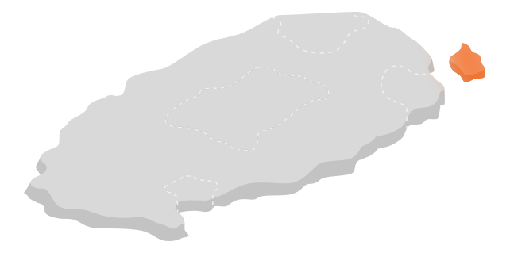
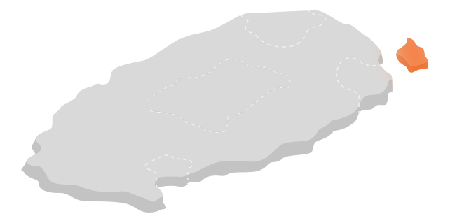

가장 빨리
벚꽃이 피는 곳.
일정은 짧고 갈 곳은 많고. 먹고 싶은 것도 보고 싶은 것도 많은데 ... 여행 인플루언서들이 강력 추천하는 여행지들을 모았습니다. 한눈에 보이는 제주 여행지 위시리스트 4곳!
일정은 짧고 갈 곳은 많고. 먹고 싶은 것도 보고 싶은 것도 많은데 ... 여행 인플루언서들이 강력 추천하는 여행지들을 모았습니다. 한눈에 보이는 제주 여행지 위시리스트 4곳!
제주도에서는 본섬인 제주도를 제외하면 가장 넓다(6.18제곱킬로미터). 명칭은 소(牛)가 옆으로 누워있는 모습과 닮았다고 해서 우도(牛島)로 붙였다고 전한다. 바다 쪽에서 우도봉 쪽을 바라보면 소(牛)가 옆으로 누워 있는 모습과 같다고 한다.